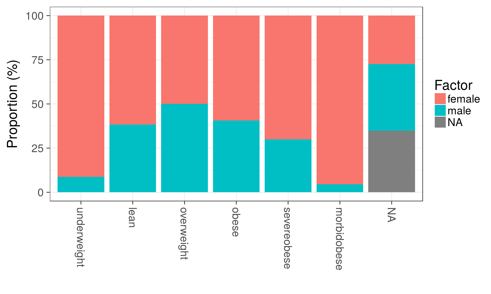

Instructions to manipulate microbiome data sets using tools from the phyloseq package and some extensions from the microbiome package, including subsetting, aggregating and filtering.
Load example data:
library(phyloseq)
library(microbiome)
data(atlas1006) # Load the data
pseq <- atlas1006 # Rename the dataA phyloseq object contains OTU table (taxa abundances), sample metadata, taxonomy table (mapping between OTUs and higher-level taxonomic classifications), and phylogenetic tree (relations between the taxa). Some of these are optional.
Pick metadata:
meta <- sample_data(pseq)Taxonomy table:
taxonomy <- tax_table(pseq)Abundances for taxonomic groups (‘OTU table’) as a TaxaxSamples matrix:
# Absolute abundances
otu.absolute <- abundances(pseq)
# Relative abundances
otu.relative <- abundances(pseq, "compositional")Melt phyloseq data for easier plotting:
df <- psmelt(pseq)
kable(head(df))| OTU | Sample | Abundance | age | gender | nationality | DNA_extraction_method | project | diversity | bmi_group | subject | time | sample | Phylum | Genus | |
|---|---|---|---|---|---|---|---|---|---|---|---|---|---|---|---|
| 113110 | Prevotella melaninogenica et rel. | Sample-448 | 944002 | 54 | female | CentralEurope | o | 18 | 5.98 | lean | 448 | 0 | Sample-448 | Bacteroidetes | Prevotella melaninogenica et rel. |
| 113015 | Prevotella melaninogenica et rel. | Sample-360 | 902034 | 45 | female | CentralEurope | o | 13 | 5.49 | severeobese | 360 | 0 | Sample-360 | Bacteroidetes | Prevotella melaninogenica et rel. |
| 112747 | Prevotella melaninogenica et rel. | Sample-190 | 862870 | 34 | female | CentralEurope | r | 7 | 6.06 | lean | 190 | 0 | Sample-190 | Bacteroidetes | Prevotella melaninogenica et rel. |
| 113109 | Prevotella melaninogenica et rel. | Sample-743 | 852350 | 52 | male | US | NA | 19 | 5.21 | obese | 743 | 0 | Sample-743 | Bacteroidetes | Prevotella melaninogenica et rel. |
| 112944 | Prevotella melaninogenica et rel. | Sample-366 | 851147 | 52 | female | CentralEurope | o | 15 | 5.63 | obese | 366 | 0 | Sample-366 | Bacteroidetes | Prevotella melaninogenica et rel. |
| 113639 | Prevotella melaninogenica et rel. | Sample-375 | 844482 | 45 | female | CentralEurope | o | 16 | 5.64 | severeobese | 375 | 0 | Sample-375 | Bacteroidetes | Prevotella melaninogenica et rel. |
Sample names and variables
head(sample_names(pseq))## [1] "Sample-1" "Sample-2" "Sample-3" "Sample-4" "Sample-5" "Sample-6"Total OTU abundance in each sample
head(sample_sums(pseq))## Sample-1 Sample-2 Sample-3 Sample-4 Sample-5 Sample-6
## 479428 640574 449884 684997 757697 499535Abundance of a given species in each sample
head(get_sample(pseq, "Akkermansia"))## Sample-1 Sample-2 Sample-3 Sample-4 Sample-5 Sample-6
## 1319 2299 29980 3824 2133 864Filter samples
f1 <- filterfun_sample(topp(0.1))
taxa <- genefilter_sample(pseq, f1, A = round(0.5 * nsamples(pseq)))Select samples by specific metadata fields
pseq.subset <- subset_samples(pseq, nationality == "US")Pick samples at the baseline time points only:
pseq0 <- baseline(pseq)The microbiome package provides a wrapper for standard sample/OTU transforms. For arbitrary transforms, use the transform_sample_counts function in the phyloseq package.
Log10 transform (log(1+x) if the data contains zeroes). Also “Z”, “clr”, and “hellinger” are available as common transforms.
pseq.log <- transform(pseq, "log10")Relative abundances (the input data needs to be in absolute scale, not logarithmic!):
pseq1 <- microbiome::transform(pseq, "compositional", "OTU")
pseq2 <- phyloseq::transform_sample_counts(pseq, function(x) x/sum(x))Sample variable names
sample_variables(pseq)## [1] "age" "gender"
## [3] "nationality" "DNA_extraction_method"
## [5] "project" "diversity"
## [7] "bmi_group" "subject"
## [9] "time" "sample"Pick values for a given variable
head(get_variable(pseq, sample_variables(pseq)[1]))## [1] 28 24 52 22 25 42Assign new fields to metadata
# Calculate diversity for samples
div <- microbiome::diversity(pseq, measures = "Shannon")$Shannon
# Assign this to sample metadata
sample_data(pseq)$diversity <- divNumber of taxa
n <- ntaxa(pseq)Most abundant taxa
topx <- top_taxa(pseq, n = 10)Names
ranks <- rank_names(pseq) # Taxonomic levels
taxa <- taxa(pseq) # Taxa names at the analysed levelSubset taxa:
pseq.bac <- subset_taxa(pseq, Phylum == "Bacteroidetes")Prune (select) taxa:
# List of Genera in the Bacteroideted Phylum
taxa <- map_levels(NULL, "Phylum", "Genus", pseq)$Bacteroidetes
# With given taxon names
ex2 <- prune_taxa(taxa, pseq)
# Taxa with positive sum across samples
ex3 <- prune_taxa(taxa_sums(pseq) > 0, pseq)Filter by user-specified function values (here variance):
f <- filter_taxa(pseq, function(x) var(x) > 1e-05, TRUE)List unique phylum-level groups:
head(get_taxa_unique(pseq, "Phylum"))## [1] "Actinobacteria" "Bacilli"
## [3] "Proteobacteria" "Verrucomicrobia"
## [5] "Bacteroidetes" "Clostridium cluster XV"Pick the taxa abundances for a given sample:
samplename <- sample_names(pseq)[[1]]
# Two ways to pick abundances for a particular taxon
tax.abundances <- get_taxa(pseq, samplename)
tax.abundances2 <- abundances(pseq)[, samplename]Aggregate taxa to higher taxonomic levels. This is particularly useful if the phylogenetic tree is missing. When it is available, see merge_samples, merge_taxa and tax_glom)
pseq2 <- aggregate_taxa(pseq, "Phylum") Merging phyloseq objects
merge_phyloseq(pseqA, pseqB)Convert between taxonomic levels (here from Genus (Akkermansia) to Phylum (Verrucomicrobia):
m <- map_levels("Akkermansia", "Genus", "Phylum", tax_table(pseq))
print(m)## [1] "Verrucomicrobia"Visualize frequencies of given factor (sex) levels within the indicated groups (group):
res <- plot_frequencies(sample_data(pseq), "bmi_group", "gender")
print(res$plot)
# Retrieving the actual data values:
kable(head(res$data), digits = 2)| Groups | Factor | n | pct |
|---|---|---|---|
| underweight | female | 21 | 91.30 |
| underweight | male | 2 | 8.70 |
| lean | female | 304 | 61.66 |
| lean | male | 189 | 38.34 |
| overweight | female | 102 | 50.00 |
| overweight | male | 102 | 50.00 |